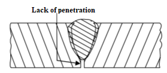
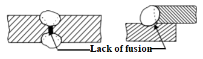
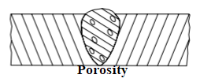
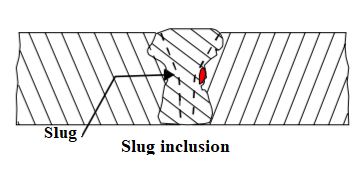
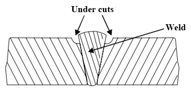
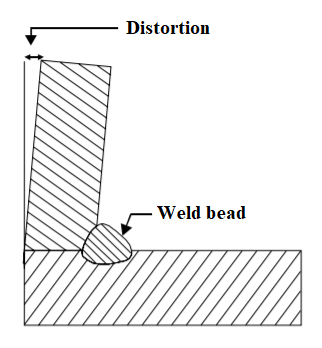
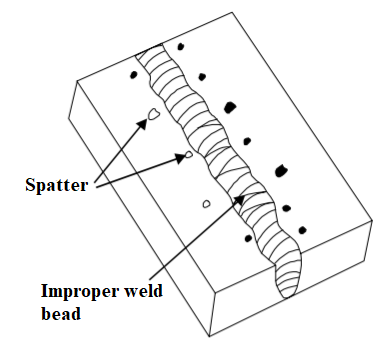

Chapter 8: Welding defects and inspection¶
Welding defects¶
There are some welding defects and they are as follows:
a) Lack of penetration¶
- This type of defect occurs when the filler metal fails to penetrate into the joint. The reason for such failure can be:
Inadequate de-slagging
Incorrect edge penetration
Incorrect welding technique
b) Lack of fusion¶
- It is the situation when the filler metal fails to fuse with the parent metal and the reason can be:
Selection of incorrect welding technique
Insufficient heat
Too fast welding process
c) Porosity¶
- This defect is caused by the trapping of gas during the welding process. Porosity means the small holes throughout the weld metal. The reasons for porosity are as:
Dampness
Fast cooling of the weld
Chemicals in the metal
d) Slag Inclusion¶
{kind=link}
- It is the defect caused when the slag or other impurities are trapped in the weld. The reasons for such situation are:
If slag from previous runs are not cleaned
Poor cleaning and preparation of the base metal before welding.
e) Undercuts¶
{kind=link}
- It is the groove or slot along the edges of the weld. This defect are caused by:
Too fast welding process
Inappropriate welding technique
Too great a heat build-up
f) Overlays¶
- Overlays consists of metal on the parent metal without fusing with it. This defect is because of:
Contamination of the parent metal
Insufficient amount of heat
g) Blowholes¶
- Blowholes are the large holes in the weld and they are caused when:
Gas is trapped.
Filler of parent metals are contaminated
h) Distortion¶
{kind=link}
- Distortion is the situation where metal is distorted because of expansion and contraction of the heated portion of metal in welding. Some reasons for distortion are:
High cooling rate
Small diameter electrode
Poor clamping and
Slow arc travel speed
i) Poor weld bead appearance¶
{kind=link}
- It is formed when the width of the weld bead deposited is not uniform or straight. It can form because of following reasons:
Improper arc length
Inappropriate welding technique
Damaged electrode coating
Poor electrode
Earthing connection
j) Cracking¶
- Cracks can be formed in both weld metal or in the parent metal. The reasons for cracking can be:
Unsuitable parent metals used for welding
Inappropriate welding technique
k) Burn through¶
- It is the collapse of the weld pool and the reasons of burn through are:
High heat concentration
Poor edge preparation
l) Excessive penetration¶
- This defect means the weld metal extends above the surface or protrudes through the root of the weld. The reasons for excessive penetration are:
Incorrect edge preparation
High heat concentration
Too slow welding process
Introduction of welding inspection¶
Welding is the most essential part of today’s industrial age. It is because of development in welding that today ships, rockets, aeroplanes, houses, machines, electronic devices and other are being made. Welding only is not enough if there is no quality. Therefore, inspection and test both are also equally important for increasing the reliability and durability in welded materials. Inspection of welding can be done in three phases and they are:
Inspection before welding
Inspection during welding
Inspection after welding (types in basic)
Inspection before welding:¶
- Before going to welding process, it is also necessary to analyze the structure of workpiece. If workpiece itself is of poor quality then welded product cannot be expected to be of good quality. Therefore, to bring quality, pleasant appearance and reliability in final product, following steps are need to be considered:
Analysis of workpiece quality
Selection of welding method
Selection of skilled manpower
Weldability of filler material
Required machine and equipment
Electrode according to workpiece
Welding joints and positions
Inspection during welding¶
- Similarly, inspection during the welding can be done following given steps:
Examining the arc length while welding
Inspecting whether welded metal is bonding well or not
Applying right amount of current
Making right angularity of electrode
Constant speed while welding
Carefulness and alertness while welding
No entry for foreign matters.
Arc blow should not be there.
Inspection after welding (types in basic)¶
- Once welding is done, joints need to be inspected very carefully. Those joints with fine outward finish could have defects inside. So, test need to be performed by removing slag. To achieve strong, reliable and attractive welding, following test need to be performed:
Non-destructive test
Semi-destructive test
Destructive test
Non-destructive test:¶
This type of test does not require cutting, splitting and breaking of workpiece.
- It is a simple mechanical test which can be performed by following methods:
Visual examination
Paraffin oil test
Stethoscope test
Ultrasonic test
Hydraulic pressure test
Magnetic particle test
X-ray test
Gamma ray test
Dye penetrate test
Air test
Semi-destructive test:¶
A small part of welded metal is cut-off from the workpiece and installed as before after the test is done. This type of test is known as semi-destructive test.
- There are normally three methods for performing semi-destructive test and they are:
Cutting test
Acid etching test
Drilling test
Destructive test:¶
Destructive test is used to get physical and mechanical properties of workpiece. Once this test is performed, the workpiece cannot be used again. Destructive test is done by twisting, breaking, cutting, stretching and hitting.
- There are some tests under destructive test and they are:
Tensile test
Bend test
Impact test
Nick break test
Hardness test
Fillet Rupture test
Types of metal¶
- Metal are class of substance characterized by high electrical and thermal conductivity and other characteristics like malleability, ductility and high reflectivity of light. Steel, Aluminium, Lead, Tin, Brass, Bronze and Silver are all examples of metal. Metal can be divided into two types and they are:
Ferrous
Non ferrous
Ferrous Metal¶
Ferrous are those metal that are alloys of iron and other elements.
Some examples of ferrous metal are alloy steel, carbon steel, wrought iron and cast iron.
Non-Ferrous Metal¶
Non-Ferrous metals do not have iron in it.
Some examples of non-ferrous metal are copper, aluminium, silver and gold.
S/n |
Ferrous metal |
Non-ferrous metal |
|
|---|---|---|---|
High concentration of iron is present. |
Does not have any iron in them at all. |
||
Prone to rust when exposed to moisture. |
It does not rust as ferrous when exposed to moisture. |
||
It is attracted by magnet. |
It is not attracted by magnet. |
||
While hammering or beating it produces metallic sound. |
It does not produce metallic sound. |
||
It has high melting point. |
It has low melting point. |
||
It is used in heavy constructional works and tool manufacturing. |
It is used in making pipes, roofing and small machine parts. |
Physical properties of metal¶
Metals have their distinct physical properties and they are:
Color of metal(i.e. Color of aluminium is white.)
Specific weight(i.e. Aluminium weighs 2.7gf/cm3)
Magnetic property(i.e. Aluminium is not attracted to magnet)
Conductivity(i.e. Aluminium is a good conductor.)
Melting point(i.e. Aluminum starts melting when temperature reaches 660 degree Celsius.)
Molecular Structure
Mechanical properties of metal¶
Mechanical properties of metal are as follows:
Ductility
Elasticity
Hardness
Malleability
Brittleness
Sonority (i.e. Sound produced upon hitting the metal.)
Method of metal identification¶
- Some of the popular methods on metal identification are as follows:
Visualization test (i.e. Color and surface appearance)
Magnetic test
File test
Oxy-Acetylene torch test for heat conductivity
Spark test by observing sparks at grinding wheel under subdued light.
Chip test by removing a small portion of material from metal with a sharp cold chisel.
Hardness test and so on.